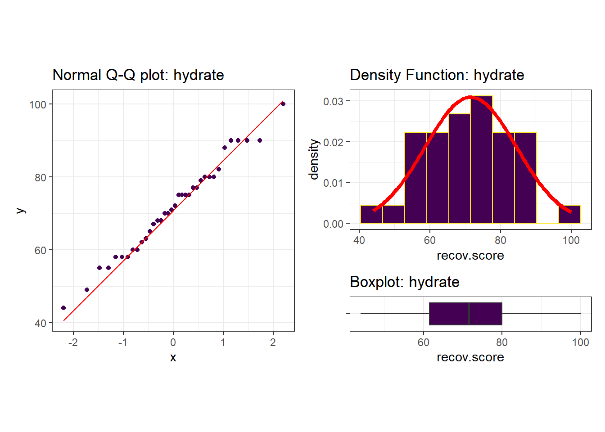
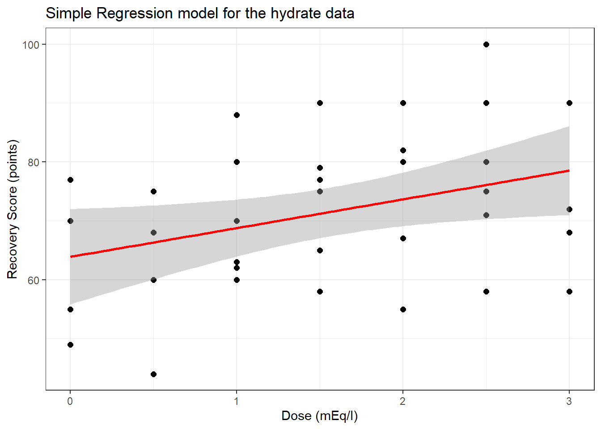
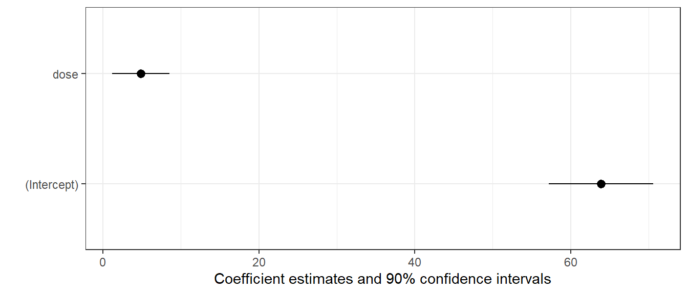
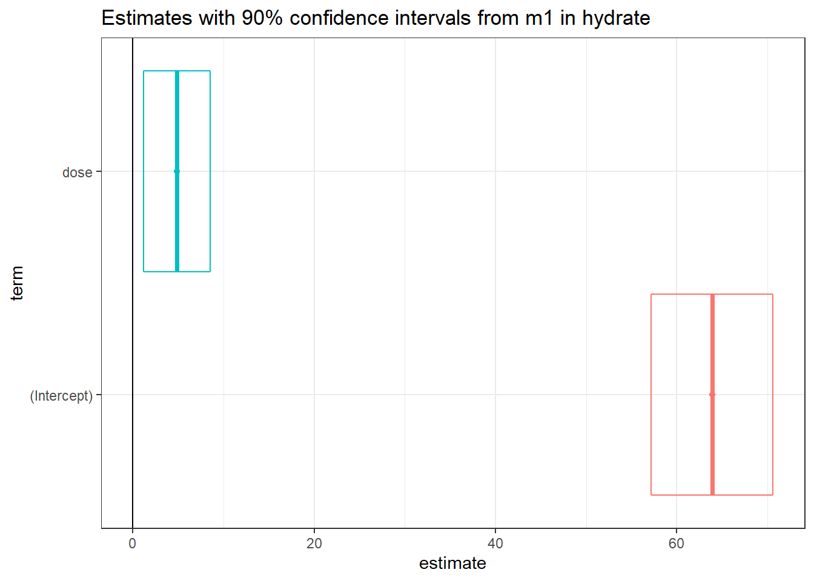
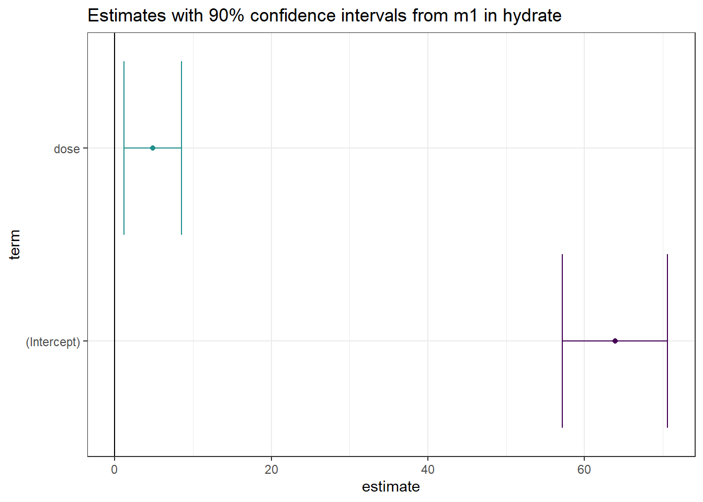
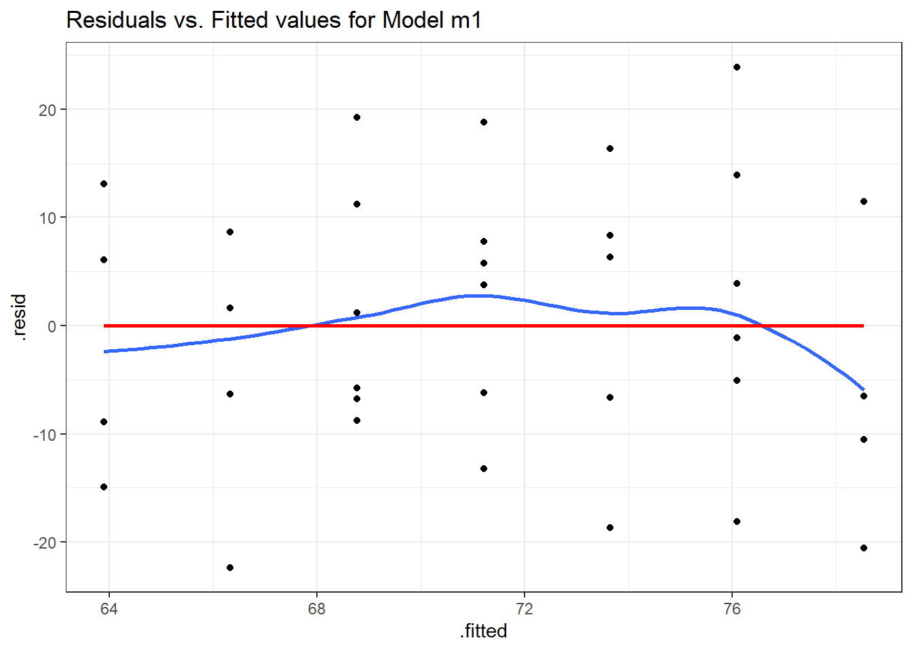
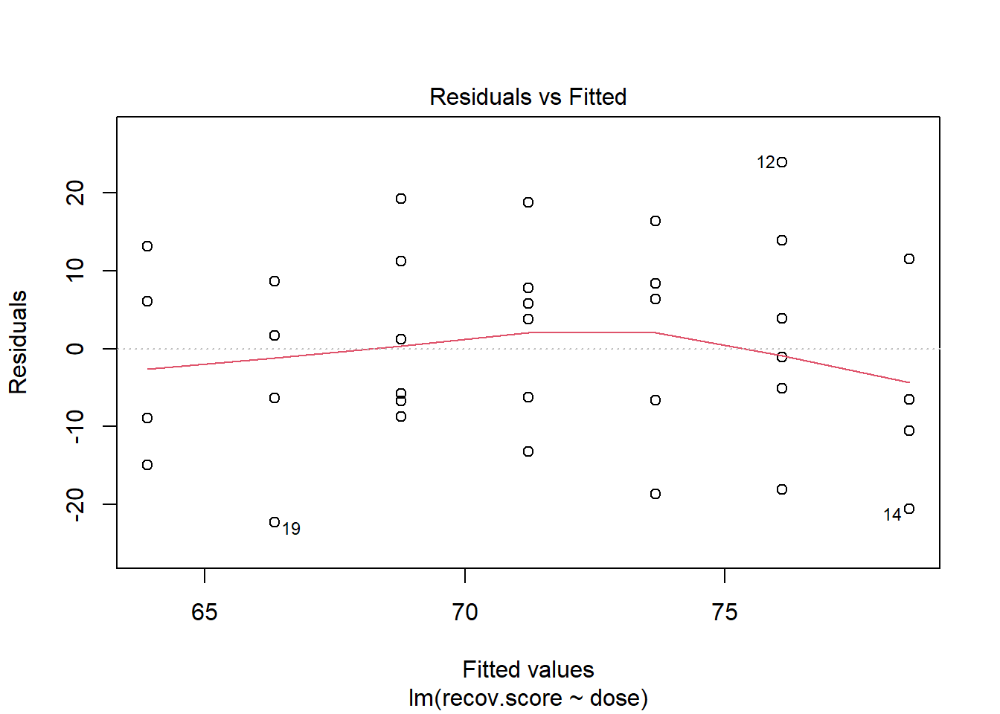

16 Dehydration Recovery
16.1 Setup: Packages Used Here
We will also use the favstats function from the mosaic package.
16.2 The Data
The hydrate data describe the degree of recovery that takes place 90 minutes following treatment of moderate to severe dehydration, for 36 children diagnosed at a hospital’s main pediatric clinic.
Upon diagnosis and study entry, patients were treated with an electrolytic solution at one of seven dose levels (0, 0.5, 1.0, 1.5, 2.0, 2.5, 3.0 mEq/l) in a frozen, flavored, ice popsicle. The degree of rehydration was determined using a subjective scale based on physical examination and parental input, converted to a 0 to 100 point scale, representing the percent of recovery (recov.score). Each child’s age (in years) and weight (in pounds) are also available.
First, we’ll check ranges (and for missing data) in the hydrate file.
id recov.score dose age
Min. : 1.00 Min. : 44.00 Min. :0.000 Min. : 3.000
1st Qu.: 9.75 1st Qu.: 61.50 1st Qu.:1.000 1st Qu.: 5.000
Median :18.50 Median : 71.50 Median :1.500 Median : 6.500
Mean :18.50 Mean : 71.56 Mean :1.569 Mean : 6.667
3rd Qu.:27.25 3rd Qu.: 80.00 3rd Qu.:2.500 3rd Qu.: 8.000
Max. :36.00 Max. :100.00 Max. :3.000 Max. :11.000
weight
Min. :22.00
1st Qu.:34.50
Median :47.50
Mean :46.89
3rd Qu.:57.25
Max. :76.00 There are no missing values, and all of the ranges make sense. There are no especially egregious problems to report.
16.3 A Scatterplot Matrix
Next, we’ll use a scatterplot matrix to summarize relationships between the outcome recov.score and the key predictor dose as well as the ancillary predictors age and weight, which are of less interest, but are expected to be related to our outcome. The one below uses the ggpairs function in the GGally package, as introduced in Part A of the Notes. We place the outcome in the bottom row, and the key predictor immediately above it, with age and weight in the top rows, using the select function within the `ggpairs call.
What can we conclude here?
- It looks like
recov.scorehas a moderately strong negative relationship with bothageandweight(with correlations in each case around -0.5), but a positive relationship withdose(correlation = 0.36). - The distribution of
recov.scorelooks to be pretty close to Normal. No potential predictors (age,weightanddose) show substantial non-Normality. -
ageandweight, as we’d expect, show a very strong and positive linear relationship, with r = 0.94 - Neither
agenorweightshows a meaningful relationship withdose. (r = 0.16)
16.4 Are the recovery scores well described by a Normal model?
Next, we’ll do a more thorough graphical summary of our outcome, recovery score.
p1 <- ggplot(hydrate, aes(sample = recov.score)) +
geom_qq(col = '#440154') + geom_qq_line(col = "red") +
theme(aspect.ratio = 1) +
labs(title = "Normal Q-Q plot: hydrate")
p2 <- ggplot(hydrate, aes(x = recov.score)) +
geom_histogram(aes(y = stat(density)),
bins = 10, fill = '#440154', col = '#FDE725') +
stat_function(fun = dnorm,
args = list(mean = mean(hydrate$recov.score),
sd = sd(hydrate$recov.score)),
col = "red", lwd = 1.5) +
labs(title = "Density Function: hydrate")
p3 <- ggplot(hydrate, aes(x = recov.score, y = "")) +
geom_boxplot(fill = '#440154', outlier.color = '#440154') +
labs(title = "Boxplot: hydrate", y = "")
p1 + (p2 / p3 + plot_layout(heights = c(4,1)))Warning: `stat(density)` was deprecated in ggplot2 3.4.0.
ℹ Please use `after_stat(density)` instead.
| min | Q1 | median | Q3 | max | mean | sd | n | missing | |
|---|---|---|---|---|---|---|---|---|---|
| 44 | 61.5 | 71.5 | 80 | 100 | 71.6 | 12.9 | 36 | 0 |
I see no serious problems with assuming Normality for these recovery scores. Our outcome variable doesn’t in any way need to follow a Normal distribution, but it’s nice when it does, because summaries involving means and standard deviations make sense.
16.5 Simple Regression: Using Dose to predict Recovery
To start, consider a simple (one predictor) regression model using dose alone to predict the % Recovery (recov.score). Ignoring the age and weight covariates, what can we conclude about this relationship?
16.6 The Scatterplot, with fitted Linear Model
ggplot(hydrate, aes(x = dose, y = recov.score)) +
geom_point(size = 2) +
geom_smooth(method = "lm", formula = y ~ x, col = "red") +
labs(title = "Simple Regression model for the hydrate data",
x = "Dose (mEq/l)", y = "Recovery Score (points)")
16.7 The Fitted Linear Model
To obtain the fitted linear regression model, we use the lm function:
| term | estimate | std.error | statistic | p.value |
|---|---|---|---|---|
| (Intercept) | 63.90 | 3.97 | 16.09 | 0.00 |
| dose | 4.88 | 2.17 | 2.25 | 0.03 |
So, our fitted regression model (prediction model) is recov.score = 63.9 + 4.88 dose.
16.7.1 Confidence Intervals
We can obtain confidence intervals around the coefficients of our fitted model with tidy, too.
| term | estimate | std.error | statistic | p.value | conf.low | conf.high |
|---|---|---|---|---|---|---|
| (Intercept) | 63.90 | 3.97 | 16.09 | 0.00 | 57.18 | 70.61 |
| dose | 4.88 | 2.17 | 2.25 | 0.03 | 1.21 | 8.55 |
So, our 90% confidence interval for the slope of dose ranges from 1.21 to 8.55.
16.8 Coefficient Plots with modelplot
The modelplot() function from the modelsummary package can provide us with one potential graph.
modelplot(m1, conf_level = 0.90)
16.9 Coefficient Plots with ggstance
The tidy method makes it easy to construct coefficient plots using ggplot2, and we’ll also make use of the geom_crossbarh function from the ggstance package.
td <- tidy(m1, conf.int = TRUE, conf.level = 0.90)
ggplot(td, aes(x = estimate, y = term, col = term)) +
geom_point() +
geom_crossbarh(aes(xmin = conf.low, xmax = conf.high)) +
geom_vline(xintercept = 0) +
guides(col = "none") +
labs(title = "Estimates with 90% confidence intervals from m1 in hydrate")Warning: Using the `size` aesthetic with geom_polygon was deprecated in ggplot2 3.4.0.
ℹ Please use the `linewidth` aesthetic instead.Warning: Using the `size` aesthetic with geom_segment was deprecated in ggplot2 3.4.0.
ℹ Please use the `linewidth` aesthetic instead.
Another option would be to use geom_errorbarh in this setting, perhaps with a different color scheme…
td <- tidy(m1, conf.int = TRUE, conf.level = 0.90)
ggplot(td, aes(x = estimate, y = term, col = term)) +
geom_point() +
geom_errorbarh(aes(xmin = conf.low, xmax = conf.high)) +
geom_vline(xintercept = 0) +
scale_color_viridis_d(end = 0.5) +
guides(col = "none") +
labs(title = "Estimates with 90% confidence intervals from m1 in hydrate")Warning: Using the `size` aesthetic with geom_path was deprecated in ggplot2 3.4.0.
ℹ Please use the `linewidth` aesthetic instead.
16.10 The Summary Output
To get a more complete understanding of the fitted model, we’ll summarize it.
Call:
lm(formula = recov.score ~ dose, data = hydrate)
Residuals:
Min 1Q Median 3Q Max
-22.3360 -7.2763 0.0632 8.4233 23.9028
Coefficients:
Estimate Std. Error t value Pr(>|t|)
(Intercept) 63.896 3.970 16.093 <2e-16 ***
dose 4.881 2.172 2.247 0.0313 *
---
Signif. codes: 0 '***' 0.001 '**' 0.01 '*' 0.05 '.' 0.1 ' ' 1
Residual standard error: 12.21 on 34 degrees of freedom
Multiple R-squared: 0.1293, Adjusted R-squared: 0.1037
F-statistic: 5.047 on 1 and 34 DF, p-value: 0.0312716.10.1 Model Specification
- The first part of the output specifies the model that has been fit.
- Here, we have a simple regression model that predicts
recov.scoreon the basis ofdose. - Notice that we’re treating
dosehere as a quantitative variable. If we wanteddoseto be treated as a factor, we’d have specified that in the model.
- Here, we have a simple regression model that predicts
16.10.2 Residual Summary
- The second part of the output summarizes the regression residuals across the subjects involved in fitting the model.
- The residual is defined as the Actual value of our outcome minus the predicted value of that outcome fitted by the model.
- In our case, the residual for a given child is their actual
recov.scoreminus the predictedrecov.scoreaccording to our model, for that child. - The residual summary gives us a sense of how “incorrect” our predictions are for the
hydrateobservations.- A positive residual means that the observed value was higher than the predicted value from the linear regression model, so the prediction was too low.
- A negative residual means that the observed value was lower than the predicted value from the linear regression model, so the prediction was too high.
- The residuals will center near 0 (the ordinary least squares model fitting process is designed so the mean of the residuals will always be zero)
- We hope to see the median of the residuals also be near zero, generally. In this case, the median prediction is 0.06 point too low.
- The minimum and maximum show us the largest prediction errors, made in the subjects used to fit this model.
- Here, we predicted a recovery score that was 22.3 points too high for one patient, and another of our predicted recovery scores was 23.9 points too low.
- The middle half of our predictions were between 8.4 points too low and 7.3 points too high.
16.10.3 Coefficients Output
- The Coefficients output begins with a table of the estimated coefficients from the regression equation.
- Generally, we write a simple regression model as \(y = \beta_0 + \beta_1 x\).
- In the
hydratemodel, we haverecov.score= \(\beta_0\) + \(\beta_1\)dose. - The first column of the table gives the estimated \(\beta\) coefficients for our model
- Here the estimated intercept \(\hat{\beta_0} = 63.9\)
- The estimated slope of dose \(\hat{\beta_1} = 4.88\)
- Thus, our model is
recov.score= 63.9 + 4.88dose
We interpret these coefficients as follows:
- The intercept (63.9) is the predicted
recov.scorefor a patient receiving adoseof 0 mEq/l of the electrolytic solution. - The slope (4.88) of the
doseis the predicted change inrecov.scoreassociated with a 1 mEq/l increase in the dose of electrolytic solution.- Essentially, if we have two children like the ones studied here, and we give Roger a popsicle with dose X and Sarah a popsicle with dose X + 1, then this model predicts that Sarah will have a recovery score that is 4.88 points higher than will Roger.
- From the confidence interval output we saw previously with the function
confint(lm(recov.score ~ dose)), we are 95% confident that the true slope fordoseis between (0.47, 9.30) mEq/l. We are also 95% confident that the true intercept is between (55.8, 72.0).
16.10.4 Correlation and Slope
If we like, we can use the cor function to specify the Pearson correlation of recov.score and dose, which turns out to be 0.36. - Note that the slope in a simple regression model will follow the sign of the Pearson correlation coefficient, in this case, both will be positive.
16.10.5 Coefficient Testing
Call:
lm(formula = recov.score ~ dose, data = hydrate)
Residuals:
Min 1Q Median 3Q Max
-22.3360 -7.2763 0.0632 8.4233 23.9028
Coefficients:
Estimate Std. Error t value Pr(>|t|)
(Intercept) 63.896 3.970 16.093 <2e-16 ***
dose 4.881 2.172 2.247 0.0313 *
---
Signif. codes: 0 '***' 0.001 '**' 0.01 '*' 0.05 '.' 0.1 ' ' 1
Residual standard error: 12.21 on 34 degrees of freedom
Multiple R-squared: 0.1293, Adjusted R-squared: 0.1037
F-statistic: 5.047 on 1 and 34 DF, p-value: 0.03127Next to each coefficient in the summary regression table is its estimated standard error, followed by the coefficient’s t value (the coefficient value divided by the standard error), and the associated two-tailed p value for the test of:
- \(H_0\): This coefficient’s \(\beta\) value = 0 vs.
- \(H_A\): This coefficient’s \(\beta\) value \(\neq\) 0.
For the slope coefficient, we can interpret this choice as:
- \(H_0\): This predictor adds minimal detectable predictive value to the model vs.
- \(H_A\): This predictor adds some predictive value to the model.
In the hydrate simple regression model, by running either tidy with or just the confint function shown below, we can establish a confidence interval for each of the estimated regression coefficients.
| term | estimate | std.error | statistic | p.value | conf.low | conf.high |
|---|---|---|---|---|---|---|
| (Intercept) | 63.90 | 3.97 | 16.09 | 0.00 | 55.83 | 71.96 |
| dose | 4.88 | 2.17 | 2.25 | 0.03 | 0.47 | 9.30 |
confint(m1, level = .95) 2.5 % 97.5 %
(Intercept) 55.826922 71.964589
dose 0.465695 9.295466If the slope of dose was in fact zero, then this would mean that knowing the dose information would be of no additional value in predicting the outcome over just guessing the mean of recov.score for every subject.
So, since the confidence interval for the slope of dose does not include zero, it appears that there is at least some evidence that the model m1 is more effective than a model that ignores the dose information (and simply predicts the mean of recov.score for each subject.) That’s not saying much, actually.
16.10.6 Summarizing the Quality of Fit
- The next part of the regression summary output is a summary of fit quality.
The residual standard error estimates the standard deviation of the prediction errors made by the model.
- If assumptions hold, the model will produce residuals that follow a Normal distribution with mean 0 and standard deviation equal to this residual standard error.
- So we’d expect roughly 95% of our residuals to fall between -2(12.21) and +2(12.21), or roughly -24.4 to +24.4 and that we’d see virtually no residuals outside the range of -3(12.21) to +3(12.21), or roughly -36.6 to +36.6.
- The output at the top of the summary tells us about the observed regression residuals, and that they actually range from -22 to +24.
- In context, it’s hard to know whether or not we should be happy about this. On a scale from 0 to 100, rarely missing by more than 24 seems OK to me, but not terrific.
- The degrees of freedom here are the same as the denominator degrees of freedom in the ANOVA to follow. The calculation is \(n - k\), where \(n\) = the number of observations and \(k\) is the number of coefficients estimated by the regression (including the intercept and any slopes).
- Here, there are 36 observations in the model, and we fit k = 2 coefficients; the slope and the intercept, as in any simple regression model, so df = 36 - 2 = 34.
The multiple R-squared value is usually just referred to as R-squared.
- This is interpreted as the proportion of variation in the outcome variable that has been accounted for by our regression model.
- Here, we’ve accounted for just under 13% of the variation in % Recovery using Dose.
- The R in multiple R-squared is the Pearson correlation of
recov.scoreanddose, which in this case is 0.3595.- Squaring this value gives the R-squared for this simple regression.
- (0.3595)^2 = 0.129
R-squared is greedy.
- R-squared will always suggest that we make our models as big as possible, often including variables of dubious predictive value.
- As a result, there are various methods for adjusting or penalizing R-squared so that we wind up with smaller models.
- The adjusted R-squared is often a useful way to compare multiple models for the same response.
- \(R^2_{adj} = 1 - \frac{(1-R^2)(n - 1)}{n - k}\), where \(n\) = the number of observations and \(k\) is the number of coefficients estimated by the regression (including the intercept and any slopes).
- So, in this case, \(R^2_{adj} = 1 - \frac{(1 - 0.1293)(35)}{34} = 0.1037\)
- The adjusted R-squared value is not, technically, a proportion of anything, but it is comparable across models for the same outcome.
- The adjusted R-squared will always be less than the (unadjusted) R-squared.
16.10.7 ANOVA F test
- The last part of the standard summary of a regression model is the overall ANOVA F test.
The hypotheses for this test are:
- H0: Each of the coefficients in the model (other than the intercept) has \(\beta\) = 0 vs.
- HA: At least one regression slope has \(\beta \neq\) 0
Since we are doing a simple regression with just one predictor, the ANOVA F test hypotheses are exactly the same as the t test for dose:
- H0: The slope for
dosehas \(\beta\) = 0 vs. - HA: The slope for
dosehas \(\beta \neq\) 0
In this case, we have an F statistic of 5.05 on 1 and 34 degrees of freedom, yielding p = 0.03
This provides some evidence that “something” in our model (here, dose is the only predictor) predicts the outcome to a degree beyond that easily attributed to chance alone. This is not actually surprising, nor is it especially interesting. The confidence interval for the slope is definitely more interesting than this.
- In simple regression (regression with only one predictor), the t test for the slope (
dose) always provides the same p value as the ANOVA F test.- The F test statistic in a simple regression is always by definition just the square of the slope’s t test statistic.
- Here, F = 5.047, and this is the square of t = 2.247 from the Coefficients output
This test is basically just a combination of the R-squared value (13%) and the sample size. We don’t learn much from it that’s practically interesting or useful.
16.11 Viewing the complete ANOVA table
We can obtain the complete ANOVA table associated with this particular model, and the details behind this F test using the anova function:
Analysis of Variance Table
Response: recov.score
Df Sum Sq Mean Sq F value Pr(>F)
dose 1 752.2 752.15 5.0473 0.03127 *
Residuals 34 5066.7 149.02
---
Signif. codes: 0 '***' 0.001 '**' 0.01 '*' 0.05 '.' 0.1 ' ' 1- The R-squared for our regression model is equal to the \(\eta^2\) for this ANOVA model.
- If we divide SS(dose) = 752.2 by the total sum of squares (752.2 + 5066.7), we’ll get the multiple R-squared [0.1293]
- Note that this is not the same ANOVA model we would get if we treated
doseas a factor with seven levels, rather than as a quantitative variable.
16.12 Using glance to summarize the model’s fit
When applied to a linear model, the glance function from the broom package summarizes 12 characteristics of the model’s fit.
Let’s look at the eight of these that we’ve already addressed.
| r.squared | adj.r.squared | sigma | statistic | p.value | df | df.residual | nobs |
|---|---|---|---|---|---|---|---|
| 0.129 | 0.104 | 12.2 | 5.05 | 0.031 | 1 | 34 | 36 |
- We’ve discussed the R-square value, shown in
r.squared. - We’ve also discussed the adjusted R-square value, in
adj.r.squared -
sigmais the residual standard error. -
statisticis the ANOVA F statistic. -
p.valueis the p value associated with the ANOVA F statistic. -
dfis the numerator degrees of freedom (here, thedfassociated withdose) for the ANOVA test associated with this model. -
df.residualis the denominator degrees of freedom (here thedfassociated withresidual) for that same ANOVA test. - Remember that the F-statistic at the bottom of the summary output provides these last four statistics, as well.
-
nobsis the number of observations (rows) used to fit the model.
Now, let’s look at the remaining four summaries:
| logLik | AIC | BIC | deviance |
|---|---|---|---|
| -140.1 | 286.3 | 291 | 5066.7 |
-
logLikis the log-likelihood value for the model, and is most commonly used for a model (like the ordinary least squares model fit bylmthat is fit using the method of maximum likelihood). Thus, the log-likelihood value will be maximized in this fit. -
AICis the Akaike Information Criterion for the model. When comparing models fitted by maximum likelihood to the same outcome variable (using the same transformation, for example), the smaller the AIC, the better the fit. -
BICis the Bayes Information Criterion for the model. When comparing models fitted by maximum likelihood to the same outcome variable (using the same transformation, for example), the smaller the BIC, the better the fit. BIC often prefers models with fewer coefficients to estimate than does AIC.-
AICandBICcan be estimated using several different approaches in R, but we’ll need to use the same one across multiple models if we’re comparing the results, because the concepts are only defined up to a constant.
-
-
devianceis the fitted model’s deviance, a measure of lack of fit. It is a generalization of the residual sum of squares seen in the ANOVA table, and takes the same value in the case of a simple linear regression model fit withlmas we have here. For some generalized linear models, we’ll use this for hypothesis testing, just as the ANOVA table does in the linear model case.
16.13 Plotting Residuals vs. Fitted Values
To save the residuals and predicted (fitted) values from this simple regression model, we can use the resid and fitted commands, respectively, or we can use the augment function in the broom package to obtain a tidy data set containing these objects and others.
aug_m1 <- augment(m1)
ggplot(aug_m1, aes(x = .fitted, y = .resid)) +
geom_point() +
geom_smooth(method = "loess", formula = y ~ x, se = F) +
geom_smooth(method = "lm", formula = y ~ x, se = F, col = "red") +
labs(title = "Residuals vs. Fitted values for Model m1")
We can also obtain a plot of residuals vs. fitted values for m1 using the following code from base R.
plot(m1, which = 1)
We hope in this plot to see a generally random scatter of points, perhaps looking like a “fuzzy football”. Since we only have seven possible dose values, we obtain only seven distinct predicted values, which explains the seven vertical lines in the plot. Here, the smooth red line indicates a gentle curve, but no evidence of a strong curve, or any other regular pattern in this residual plot.